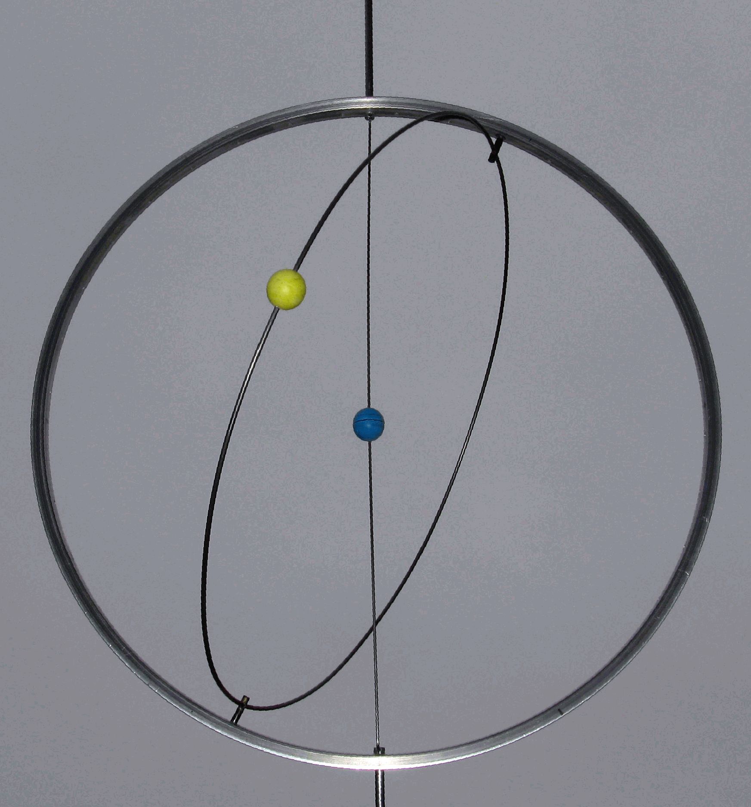

c. 408–355 BC
Greek, Cnidus
Proportion theory, astronomy, geometry
Eudoxus of Cnidus was arguably the greatest mathematician of the generation before Euclid, and much of Euclid's Elements — particularly the theory of proportion in Book V and the method of exhaustion in Book XII — is believed to be Eudoxus' work, organised and polished by Euclid.
The crisis that called for his intervention was the discovery of irrational numbers. When the Pythagoreans found that $\sqrt{2}$ cannot be expressed as a ratio of integers, it shattered their theory of proportion, which assumed all magnitudes were commensurable. Eudoxus rebuilt the theory from scratch around 370 BC, defining two ratios as equal when they behave identically under all possible comparisons with rational multiples. This definition — "for all integers $m, n$, $ma > nb$ if and only if $mc > nd$" — is essentially a Dedekind cut, twenty-three centuries early.
He also formalised the method of exhaustion: proving that two quantities are equal by showing the difference can be made smaller than any given amount. This is the technique Archimedes later wielded to compute areas and volumes, and it is the direct ancestor of epsilon-delta arguments in analysis. Eudoxus also built a sophisticated astronomical model using 27 nested rotating spheres to explain planetary motion, the first attempt to reduce celestial mechanics to pure geometry.
| Phase | Page | Referenced for |
|---|---|---|
| Phase 0 | Square Root of 2 is Irrational | Developed theory of proportion handling irrational magnitudes |
| Phase 2 | Dense Subsets | Density of rationals known implicitly since the Greeks |